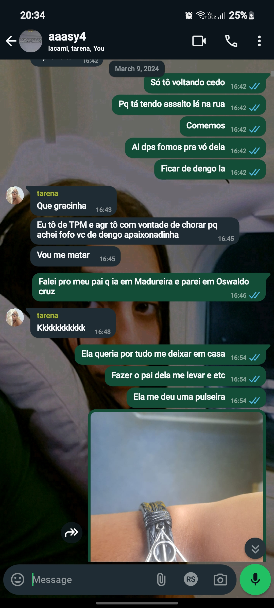
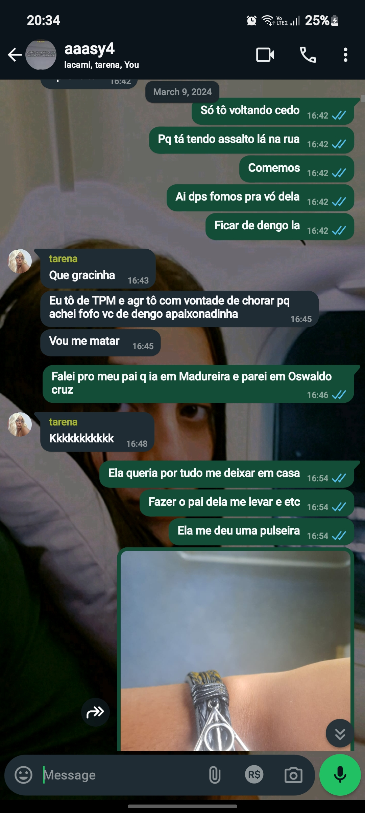

04/05/2024
Então, essa deve ser a última vez que nos vemos antes de você ir embora. De duas uma, ou eu vou ficar vendo você ler isso aqui com a maior cara de besta apaixonada, ou, vou ficar com vergonha e pedir pra você ler assim que eu for embora. Capaz de ser a primeira opção pra eu garantir que você não vai esquecer de ler.
Então, pra isso preciso voltar pra 2022, beeem quando eu soube que você existia e enchi o saco do allan pra ele mandar mensagem pra você e não ser tão estranho quando eu te chamasse no insta, a partir daí foi quando eu decidi que seria você e ponto final. "Ah mas duvido q não sei o que que não sei o que la" quer saber de uma coisa? Nessa mesma época eu tava conhecendo uma pessoa e eu acabei com tudo pq uma pessoa muito especifica tomava conta dos meus pensamentos de vez em quando ( o que me rendeu 2 longos anos sem ficar com ninguem e contando). Mas também, naquela época a gente nem se falava muito, em 2023 também não MAS eu conseguia trocar umas palavras com você de vez em quando!!! Soltei fogos nessa porra
Mas sou eu né e eu não desisto tão fácil assim não, você começou a me corresponder de certa forma, falou que era pra marcarmos um role e um tempinho depois disse que me queria (quase soltei fogos, não ironicamente) e depois nos falávamos um pouco mais frequentemente mas nem tanto também entao eu tava ali no meio termo, até você me dizer que me queria (mais uma vez) e me passar seu número
E EU CHAMEI EM EU CHAMEI DIA 11 DE JANEIRO DESSE ANO AS 06:10 DA MANHÃ....
E você me respondeu dia 24 de janeiro as 00:41 com as seguintes mensagens
"Amoe"
"Amor"
"Te amo"
*figurinha de gatinho em pé assim ☹️*
Esqueça tudo tá surtei horrores
Indo pra quando saímos da primeira vez, eu acho que nunca fiquei tão envergonhada na vida, eu tava muito receosa, com medo de dar tudo errado, de você achar que eu não era o que você esperava e pra ser sincera, quando eu te vi eu quase desmaiei de tão linda e deslumbrante que você é, eu lembro de absolutamente todos os detalhes daquele dia, tudo. Não vou me esquecer jamais. Um saco ser muito timida pq eu não sabia reagir direito perto de você, achei que esse evento não aconteceria e rolou de fato e pra mim eu estava no céu, deu tudo certo no meu ponto de vista. Cheguei em casa 1000x mais apaixonada do que eu já estava, mandei mensagem para as minhas amigas toda boba por ter te visto e morrendo de amores pela pulseira que você me deu.
 

Uso ela sempre, em todo lugar
Saber que você ia embora me abalou muito, não saber quando que vou poder te ver dnv, sentir seu cheiro e saber que provavelmente não nos falaremos da mesma forma sempre me dá vontade de chorar, eu tava torcendo pra você ficar mas seria total egoísmo meu, mas é fato que eu só quero você comigo.
Eu tava planejando da próxima vez que você viesse pro Rio (agora) te pedir em namoro, como eu não sei pq não faço a menor ideia do tamanho do seu dedo mas a aliança dava pra ser providenciada a qualquer momento, eu planejei um passeio muito bacana pra gente fazer, ver umas exposições, comer fora, andar e no final do dia, bem no por do sol, te pedir em namoro no museu do amanhã. Eu estava com tudo planejado, custos, rotas, o que iríamos fazer primeiro etc e tal.
Uma pena isso não acontecer.
Enquanto escrevo isso, 4 de maio de 2024 (faltando 20 dias pro meu aniversário e 16 pra você ir embora) eu tô me lembrando de tudo o que aconteceu, da minha visão sobre a gente e o quanto eu queria dizer "eu te amo" antes de você, o que seria impossível já que você disse muito antes de você mesma dizer. Eu te amo demais, eu te amo desde o dia que eu escrevi aquela música pra você, tô pensando ainda se te dou ela ou não.
Então, você oficialmente vai embora e eu não vou deixar de te amar em momento algum, não vou deixar de te querer e muito menos vou desistir de você. Só vou me casar se for com você, só vou ter uma família se for com você. E se acontecer de você conhecer outra pessoa e ter uma família eventualmente, eu vou torcer pra que você seja muito feliz mas eu nunca vou me esquecer de você. Henrique (agora Mohhamed), Hannah e Allana só vão existir pra mim se for com você, não tem outra possibilidade pra mim. Enfim, independente do que acontecer, eu te amo muito e vou te esperar o tempo que for preciso pra gente acontecer de verdade, andarmos juntas de moto, morar em uma chácara e cuidar das nossas crias juntas.
E obviamente, fumar um né pq ninguém é de ferro